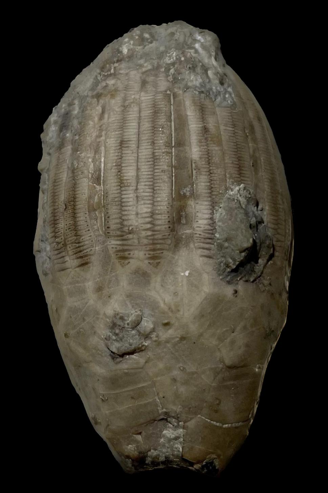
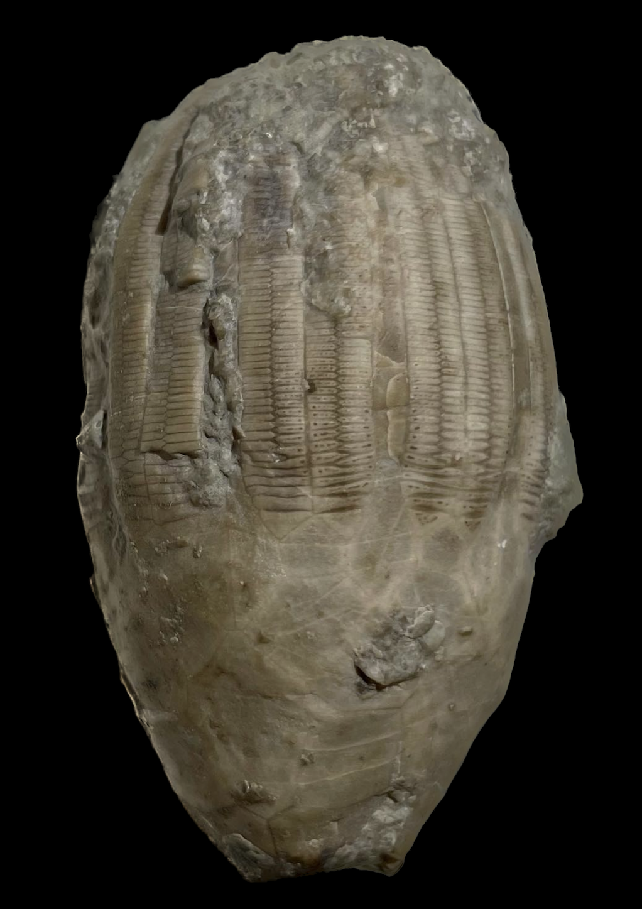

Eucalyptocrinus crassus
Silurian
Waldron Shale
Clark Co., Indiana, USA
Size: 6 cm crown
Here is a classic crinoid from Indiana. Eucalyptocrinus crassus is by far the most common crinoid found in the Waldron Shale, yet it is also one of the most unique out there. Crinoids of this genus possess a bizarre cage-like structure arising from the top of the calyx, and the arms tuck snugly into the slots in this "cage"; two per slot. This may have been a defensive adaptation to keep the arms safe from predation/damage. Hardly any other crinoid seems to have an adaptation quite like this. Even though E. crassus are common from the Waldron, they are mostly found as lone calyxes. Specimens with the "cage" and especially arms preserved are in the minority.PS. This specimen also shows some interesting dark spots on some of the arms. These might represent tissue attachment points or some of the crinoid's original coloration in life.
|

|